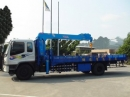
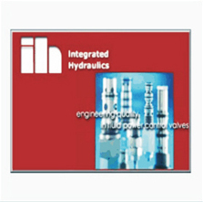
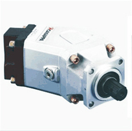
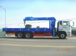
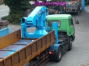
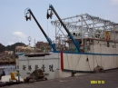
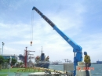
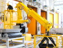

直壁式全油壓同步驅動起重機
全旋式
主打全旋 360 度作業能力，適合車裝吊掛與高機動性工作環境。
Company
國瑋發力機械自 1990 年創立以來，投入各式起重機種與特種油壓機械研發製造。2008 年遷入蘇澳龍德工業區擴廠，2013 年設立二廠，並導入日本 OTC DAIHEN 焊接自動化設備，提升產能、流程穩定性與品質控管。
團隊以創新與實用為原則，針對底座承受力、全旋 360 度結構、遙控動力、油封等關鍵細節持續改良，滿足車輛吊掛、固定式起重與客製油壓設備需求。


Products
依原廠產品目錄整理直壁式、屈臂式、固定式與客製設備系列，適用不同車輛、場域與吊掛條件。

主打全旋 360 度作業能力，適合車裝吊掛與高機動性工作環境。

以插心式配置支援車體安裝與維護彈性，兼顧結構與作業需求。

依吊掛範圍、絞盤配置與車體條件提供延伸型式選擇。

對應船舶與固定式吊掛場域，支援非車裝的穩定起重需求。

面向港區、碼頭與物料移載場景，強調可靠操作與長期使用。

適用廠房、維修區與室內工位，並可延伸至特種油壓機械應用。
News
原站公告整理如下，報價與型錄需求可直接透過聯絡表單、電話或銷售通路洽詢。
請以官方聯絡電話、信箱與授權經銷通路確認報價與服務資訊。
若有報價需求，請使用聯絡資訊或銷售通路電話洽詢。
原站提供 PDF 型錄，檔案大小 22,425KB，日期 2022-01-27。
Network
官方銷售通路涵蓋新北、桃園、台中、彰化、雲林、嘉義、台南與高雄，可依所在地快速聯繫。
原皇交通（股）公司、榮展油壓機械企業社、百益通有限公司、鼎金機械有限公司
大裕汽車商行、裕廣汽車商行、協和吊桿修配行、大元吊車油壓企業社、達榮吊桿修配行、南華企業社、上猛起重機械企業社
正發貿易、雄傑貿易有限公司、良展機械有限公司、高佑機械有限公司